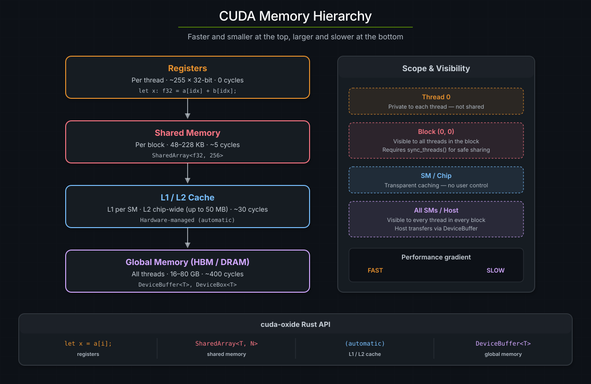
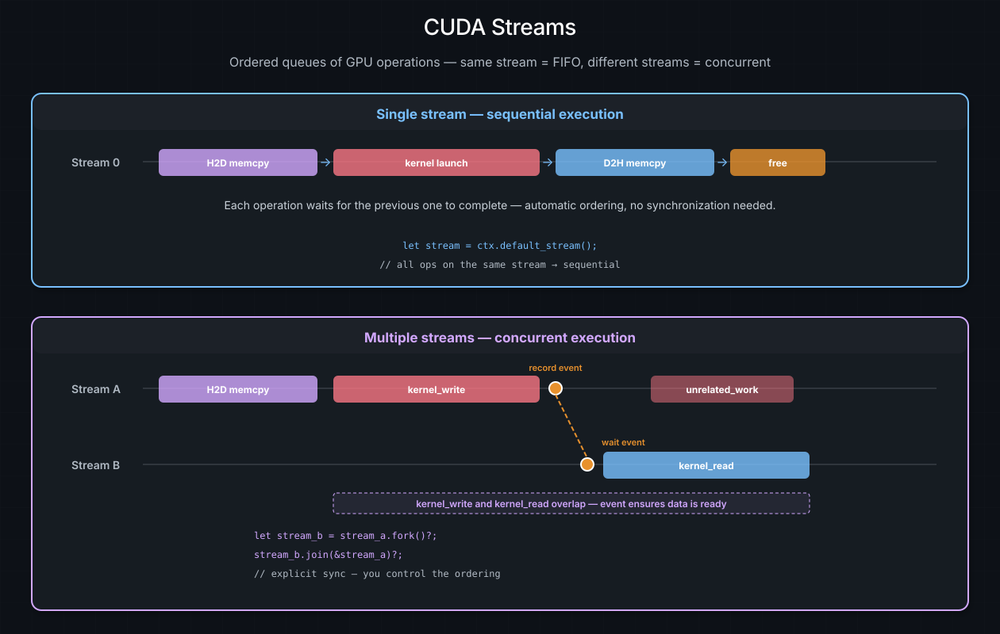
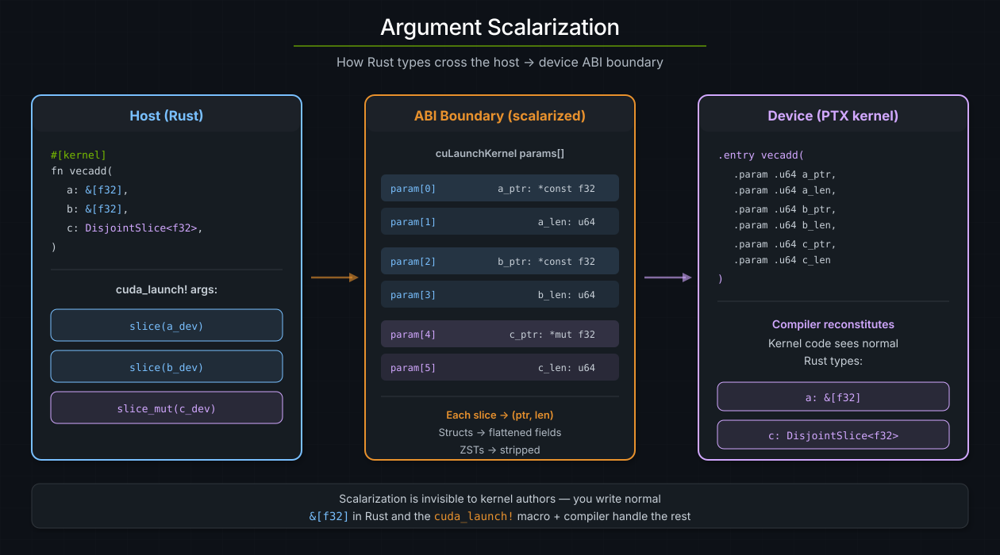

Memory and Data Movement#
GPUs have their own memory, separate from the host. Getting data to and from the device -- and choosing the right kind of memory once it's there -- is fundamental to every CUDA program. This chapter covers cuda-oxide's memory abstractions, from host/device transfers to shared memory and the kernel ABI.
参见
CUDA Programming Guide -- Device Memory for the authoritative reference on the CUDA memory hierarchy and access patterns.
The CUDA memory hierarchy#
NVIDIA GPUs expose several tiers of memory, each with different capacity, latency, and scope:
Memory |
Scope |
Typical size |
Latency |
cuda-oxide API |
|---|---|---|---|---|
Registers |
Per thread |
~255 × 32-bit |
0 cycles |
Local variables |
Shared memory |
Per block |
48--228 KB (arch-dependent) |
~5 cycles |
|
L1 cache |
Per SM |
Combined with shared |
Hardware-managed |
Automatic |
L2 cache |
Chip-wide |
Up to 50 MB (Hopper) |
~30 cycles |
Automatic |
Global memory (DRAM) |
All threads |
16--80 GB (HBM) |
~400 cycles |
|
The guiding principle: move frequently accessed data into faster, closer memory. Registers are fastest but per-thread; shared memory is fast and visible to the whole block; global memory is large but slow.
{kind=link}

The CUDA memory hierarchy from fastest (registers, per-thread) to largest (global DRAM, all threads). Each tier trades capacity for latency. The right panel shows scope and the cuda-oxide API for each level.#
Contexts and streams#
Before diving into memory APIs, two host-side concepts that appear in every code example need introduction: contexts and streams.
A CUDA context (CudaContext) binds the host thread to a specific GPU. It
owns all resources on that device -- modules, streams, allocations. You
typically create one at the start of your program:
use cuda_core::CudaContext;
let ctx = CudaContext::new(0).unwrap(); // bind to GPU 0
A CUDA stream (CudaStream) is an ordered queue of GPU operations.
Operations enqueued on the same stream execute in FIFO order -- each one
sees all side effects of the preceding operations. Operations on different
streams may overlap and run concurrently with no ordering guarantees between
them.
let stream = ctx.default_stream(); // the implicit, always-available stream
let work_stream = stream.fork()?; // a new stream, joined to the parent's current position
Every memory transfer and kernel launch requires a stream. For single-stream
programs (which covers most examples in this book), the default stream is
all you need -- everything is sequential and correct by construction.
Multi-stream pipelines unlock overlap between compute and data movement, but
require explicit synchronization via events or join:
Same stream: [kernel_A] → [memcpy_B] → [kernel_C] (automatic ordering)
Different streams: [kernel_A on stream 1] | [memcpy_B on stream 2] (concurrent, needs events)
{kind=link}

Top: single-stream execution where operations are automatically ordered in FIFO. Bottom: multi-stream execution where streams A and B run concurrently, with an event establishing the data dependency between kernel_write and kernel_read.#
参见
The Launching Kernels chapter covers stream usage in
launch macros, and the Async GPU Programming
section covers DeviceOperation which manages streams automatically.
DeviceBuffer -- host/device transfers#
DeviceBuffer<T> in cuda_core is the primary way to allocate device memory
and move data between host and GPU:
use cuda_core::{CudaContext, DeviceBuffer};
let ctx = CudaContext::new(0).unwrap();
let stream = ctx.default_stream();
// Host → device: copy a host slice to GPU memory
let a_dev = DeviceBuffer::from_host(&stream, &host_data).unwrap();
// Allocate zeroed device memory
let mut c_dev = DeviceBuffer::<f32>::zeroed(&stream, 1024).unwrap();
// Device → host: read results back
let results = c_dev.to_host_vec(&stream).unwrap();
Key methods#
Method |
Direction |
Description |
|---|---|---|
|
Host → Device |
Allocate + blocking copy |
|
-- |
Allocate + zero-fill |
|
Device → Host |
Async copy + return |
|
Device → Host |
Copy into existing slice |
|
-- |
Raw |
Ownership and drop#
DeviceBuffer frees its allocation synchronously on drop via cuMemFree.
This is a blocking driver call -- it internally synchronizes the entire device
to ensure no in-flight kernel is still touching the memory. In practice, this
means:
Dropping while a kernel is running will stall the host thread until the GPU is completely idle, then free the memory.
Dropping after synchronization (e.g., after
to_host_vecorstream.synchronize()) has no additional cost because the device is already idle.
For single-stream workloads this is fine -- everything executes in FIFO order, so by the time you read results back, all kernels are done and the free is instant. The cost becomes visible in multi-stream scenarios where you want to overlap compute with memory operations; a synchronous free on one stream can stall work on all other streams.
DeviceBox -- async-friendly device memory#
DeviceBox<T> in cuda_async solves the synchronous-free problem. On drop, it
frees memory via cuMemFreeAsync on a dedicated deallocator stream. This
is a stream-ordered operation -- the free is enqueued on the deallocator stream
and executes only after all preceding work on that stream completes. Critically,
it does not synchronize the device:
use cuda_async::device_box::DeviceBox;
use cuda_async::device_context::init_device_contexts;
init_device_contexts(0, 1)?; // Initialize device context map (default device 0)
// DeviceBox wraps a device pointer; freed asynchronously on drop
let dev_ptr: DeviceBox<f32> = /* allocated by DeviceOperation chain */;
// When dev_ptr is dropped, cuMemFreeAsync is called on the deallocator stream.
// Other streams continue running without stalling.
Choosing between them#
|
|
|
|---|---|---|
Crate |
|
|
Free on drop |
|
|
Use with |
typed sync launches |
typed async launches |
Host readback |
|
Via explicit memcpy operation |
Best for |
Single-stream, blocking workloads |
Multi-stream, pipelined workloads |
小技巧
For latency-sensitive teardown in multi-stream pipelines, prefer DeviceBox.
For straightforward single-stream examples, DeviceBuffer is simpler and
the synchronous free is effectively zero-cost.
Argument scalarization#
When you write a kernel that takes &[f32], the host and device don't agree on
how to represent a Rust slice in memory -- the struct layout can differ between
the host's x86 ABI and the NVPTX ABI. cuda-oxide solves this by
scalarizing aggregate types at the kernel boundary: decomposing them into
primitive values that both sides interpret identically.
Kernel parameter type |
What the host actually passes |
|---|---|
|
|
|
|
|
|
Struct |
One byval value (whole struct) |
Closure (with N captures) |
One byval value (whole struct) |
Zero-sized types |
Stripped entirely |
This is why typed #[cuda_module] methods accept &DeviceBuffer<T> for &[T]
and &mut DeviceBuffer<T> for writable slice-like parameters. The generated
method extracts the pointer and length for you. Inside the kernel, the compiler
reconstitutes the slice struct from the scalar parameters, so your kernel code
sees normal &[T] types.
{kind=link}

Argument scalarization: the host passes Rust slices as (ptr, len) pairs through the ABI boundary. The device kernel receives flat scalar parameters and the compiler reconstitutes the original Rust types inside the kernel.#
小技巧
Scalarization is completely invisible in normal kernel code. You write &[f32]
in the signature and use it as a regular slice. The generated launch method and
the compiler handle everything else.
DisjointSlice -- safe parallel writes#
In CUDA C++, the standard pattern for parallel output is a raw __global__
pointer that every thread indexes into. This is inherently unsafe -- nothing
prevents two threads from writing to the same location.
cuda-oxide provides DisjointSlice<T, IndexSpace> as a safe alternative. It
wraps a mutable slice and only allows writes through a ThreadIndex whose
IndexSpace matches its own. Combined with matching prepared launch geometry,
this ensures each thread accesses a unique element:
use cuda_device::{kernel, DisjointSlice};
#[kernel]
pub fn double(input: &[f32], mut out: DisjointSlice<f32>) {
if let Some((out_elem, idx)) = out.get_mut_indexed() {
*out_elem = input[idx.get()] * 2.0;
}
}
get_mut_indexed()is the one-call form: it mints the per-thread witness and resolves it to a&mut Tin a single shot.Nonecovers both out-of-grid threads (e.g.col >= ROW_STRIDEfor 2D) and out-of-slice indices.The explicit two-step form
let idx = thread::index_1d(); out.get_mut(idx)is also available when you need the index for parallel arithmetic across multiple slices.For patterns like reductions where multiple threads intentionally write to the same location,
get_unchecked_mut(unsafe) provides an escape hatch.
Why ThreadIndex makes this safe#
The key to DisjointSlice's safety is ThreadIndex<'kernel, IndexSpace> --
an opaque witness with no public constructor. The only way to obtain one
is through trusted index functions that derive the value from hardware
built-in variables (threadIdx, blockIdx, blockDim):
let idx = thread::index_1d(); // ThreadIndex<'_, Index1D> -- ok
let bad = ThreadIndex::new(42); // does not exist -- private constructor
This works because CUDA's thread indices are uniform values provided by the
hardware: every thread in a block receives a unique threadIdx from the GPU's
warp scheduler. For 1D grid launches (where only the x dimension is used), the
global index derived from blockIdx.x * blockDim.x + threadIdx.x is unique
across the entire grid.
That last statement is conditional: index_1d() ignores Y and Z. A 2D grid
would repeat the same X-derived index for every Y coordinate.
PreparedLaunch(domain=1) -> Y/Z inactive -> safe DisjointSlice writes
raw LaunchConfig -> caller proves Y/Z inactive -> unsafe launch
The witness proves the device-side index space; the prepared launch proves the host-side geometry. Both are needed for a fully safe launch.
The witness is also !Send + !Sync + !Copy + !Clone, and its 'kernel
lifetime is borrowed from a stack-local scope the macros inject -- so a
thread can't park its ThreadIndex in shared memory for a neighbour to
pick up later, and the witness can't outlive the kernel body. Combine
that with the IndexSpace parameter (Index1D, Index2D<S>,
Runtime2DIndex) and the type system rejects mismatched 2D strides at
compile time too -- a data-race hazard becomes a type error.
Unified memory and HMM#
By default, GPUs operate in a separate address space from the CPU. A GPU cannot dereference an ordinary host pointer -- the address simply doesn't map to anything in the GPU's page tables. The traditional CUDA workflow therefore requires explicit allocation in device memory followed by explicit copies:
┌──────────────────┐ ┌──────────────────┐
│ CPU Memory │ PCIe / │ GPU Memory │
│ (host DRAM) │◄────────────►│ (device HBM) │
│ │ NVLink │ │
└──────────────────┘ copy └──────────────────┘
Separate address spaces -- GPU cannot dereference host pointers
CUDA provides mechanisms that relax this restriction by letting the GPU access host memory transparently, at the cost of page-fault latency on first access.
Memory access modes at a glance#
Mode |
What GPU can access |
Allocation required |
First-access cost |
Hardware requirement |
|---|---|---|---|---|
Explicit copy |
Device memory only |
|
None (data copied upfront) |
Any CUDA GPU |
Pinned (mapped) |
Specific host buffers |
|
High (~10--20 µs per access) |
Any CUDA GPU |
Unified Memory |
Managed allocations |
|
Medium (page migration) |
Kepler+ (sm_30+) |
HMM |
Any host memory |
None |
Medium (page fault + fetch) |
Turing+ on Linux |
cuda-oxide primarily uses explicit copies (DeviceBuffer, DeviceBox) for
bulk data and HMM for non-move closure captures and small configuration
data.
Unified Memory#
Unified Memory is CUDA's managed-memory allocator (cudaMallocManaged). The
resulting pointer is valid on both the CPU and GPU -- the CUDA runtime tracks
which processor "owns" each page and migrates it on demand. When the GPU
accesses a page that currently resides in host DRAM, the runtime transparently
copies it to device memory before the kernel reads the data. This migration is
invisible to your code but not free: the first access from the "wrong" side
incurs a page fault and a DMA transfer over the interconnect. Subsequent
accesses to the same page hit the GPU's local cache.
cuda-oxide does not currently wrap cudaMallocManaged directly. For managed-
memory workflows you would use the CUDA driver API through raw bindings.
In practice, DeviceBuffer::from_host (explicit copy) covers most use cases
and gives predictable performance.
HMM (Heterogeneous Memory Management)#
HMM is a Linux kernel feature that extends Unified Memory's demand-paging model
to all system memory -- heap allocations, mmap regions, and even stack
variables. With HMM enabled, the GPU can dereference any valid host pointer
without a special CUDA allocator:
let factor = 5i32; // ordinary stack variable
let scale = |x: i32| x * factor; // captures &factor (non-move)
// SAFETY: args match the kernel's signature; &factor stays alive via HMM.
unsafe { cuda_launch! { kernel: scale, args: [...] } } // GPU reads &factor via HMM
Unlike Unified Memory, HMM requires no special allocation API -- the pointer is a plain host address. When ATS (Address Translation Services) is available on hardware-coherent platforms like Grace Hopper, it supersedes HMM and provides hardware coherence at cache-line granularity; HMM is automatically disabled.
What happens on a page fault#
When a kernel loads from an address whose page is not resident in device memory, the hardware and driver cooperate to fetch it:
The SM executes a global load (
ld.global) for a virtual address.The GPU MMU looks up the address in the TLB. On a miss, it walks the device page table.
If the page table has no mapping, the GPU raises a page fault. The faulting warp stalls; other warps on the same SM can continue.
The CUDA driver fault handler determines the source of the page:
Unified Memory -- the CUDA runtime identifies the managed allocation and initiates migration.
HMM -- the Linux kernel's HMM layer resolves the host virtual address, pins the host page, and either migrates it or creates a remote mapping.
A DMA transfer over PCIe or NVLink copies the page from host DRAM to device HBM. The GPU memory controller writes the data; the host memory controller services the read.
The GPU page table is updated, the TLB is refilled, and the warp resumes. The page is now local and cached in L2; subsequent accesses cost only hundreds of cycles.
The latency of step 5 depends on the interconnect:
Interconnect |
Bandwidth |
Fault latency |
Notes |
|---|---|---|---|
PCIe 4.0 x16 |
~25 GB/s |
~10--20 µs |
Most desktop / workstation GPUs |
PCIe 5.0 x16 |
~50 GB/s |
~5--15 µs |
Ada Lovelace + newer platforms |
NVLink 4.0 |
~900 GB/s |
~1--5 µs |
Data-center GPUs (H100, B100) |
Grace Hopper C2C |
~900 GB/s |
<1 µs |
Hardware coherent -- uses ATS, not HMM |
Because faults operate at page granularity (4 KB or 2 MB), a single fault can
satisfy many threads. Warp-level coalescing also helps: 32 threads reading
consecutive 4-byte elements touch at most one or two pages, not 32. On PCIe
systems, a single fault costs roughly the same as a small cudaMemcpy -- the
advantage of demand paging is that you only pay for the pages you actually
touch.
How cuda-oxide uses HMM#
cuda-oxide leverages HMM in two ways:
Non-move closure captures. When a non-
moveclosure is passed to a kernel, captured variables remain on the host stack and the GPU accesses them through HMM pointers. This avoids copying data that the kernel only reads once or infrequently.Struct ABI with dynamic layout. cuda-oxide matches Rust's actual struct layout (including
#[repr(Rust)]field reordering) on the device side, so HMM-accessed host structs are read correctly without#[repr(C)]or manual layout specification. The compiler queriesrustcfor field offsets and builds matching LLVM struct types with explicit padding.
HMM system requirements#
Requirement |
Minimum |
|---|---|
GPU architecture |
Turing (compute capability 7.5+) |
Linux kernel |
6.1.24+, 6.2.11+, or 6.3+ |
CUDA driver |
535+ with Open Kernel Modules |
Check whether HMM is active on your system:
nvidia-smi -q | grep Addressing
# Addressing Mode : HMM ← HMM is enabled
When to use HMM vs explicit copies#
Scenario |
Recommended approach |
|---|---|
Large arrays processed by many threads |
|
Small read-only configuration data |
HMM (pass pointer, let GPU page-fault) |
Data shared between CPU and GPU iteratively |
Explicit copies with double-buffering |
Prototyping / quick experiments |
HMM (simplest -- no copies needed) |
小技巧
HMM is a convenience, not a performance strategy. For bandwidth-sensitive kernels, explicit copies to device memory will always be faster because they avoid page-fault overhead and use the full memory bus width.
参见
CUDA Programming Guide -- Unified Memory and NVIDIA Blog -- Simplifying GPU Development with HMM for the full details on page migration, prefetching, and system requirements.